| Section | Page |
|---|---|
| 1. Abstract | 4 |
| 2. Introduction | 4 |
| 2.1 Context and Motivation | 4 |
| 2.2 Problem Statement | 4 |
| 2.3 Specific Objectives and Project Scope | 5 |
| 2.4 Repository Contribution & Report Organization | 5 |
| 3. Literature Review | 6 |
| 3.1 Survey of Existing Paradigms | 6 |
| 3.2 Comparative Evaluation of Approaches | 6 |
| 3.3 Identified Engineering & Research Gap | 7 |
| 4. Background Study | 7 |
| 4.1 Foundational Machine Learning & Statistical Concepts | 7 |
| 4.2 Complete Technology Stack Breakdown | 8 |
| 5. Design Flow and Architectural Process | 10 |
| 5.1 End-to-End System Architecture | 10 |
| 5.2 Modular Decomposition & File Mapping | 10 |
| 5.3 Execution Workflow & Decision Logic | 11 |
| 5.4 Request Lifecycle & Data Sequence Flow | 12 |
| 5.5 Object Models, Dependencies & Class Hierarchy | 12 |
| 5.6 REST API Contracts & Protocols | 13 |
| 5.7 Security, Error Handling & System Trade-Offs | 15 |
| 6. Result Analysis & Validation | 16 |
| 6.1 Verification Methodology & Testing Strategy | 16 |
| 6.2 Neural Network Empirical Training Performance | 16 |
| 6.3 Statistical EDA & PCA Dimensionality Findings | 17 |
| 6.4 Functional Verification & Test Case Matrix | 19 |
| 6.5 Technical Limitations & Bottleneck Assessment | 21 |
| 7. Conclusions and Future Work | 22 |
| 7.1 Synthesis of Completed Objectives | 22 |
| 7.2 Actionable Roadmap for Future Enhancements | 22 |
| 8. References | 23 |
| 9. Appendix | 24 |
| 9.1 Annotated Directory Structure | 24 |
| 9.2 Execution & Environment Setup Commands | 25 |
| 9.3 Key Code Artifacts | 25 |
| Figure 1: High-Level System Architecture Diagram | 10 |
| Figure 2: End-to-End Design & Execution Flowchart | 11 |
| Figure 3: Core Request / Data Sequence Diagram | 12 |
| Figure 4: Component & Class Dependency Diagram | 12 |
| Figure 5: Neural Network Validation Pipeline | 16 |
| Figure 6: Empirical Confusion Matrix & Learning Curves | 17 |
| Figure 7: Exploratory Data Analysis Visualizations | 18 |
| Figure 8: PCA Projections & Scree Variance Curve | 18 |
| Table 1: Comparative Analysis of Iris Classification Implementations | 7 |
| Table 2: Complete Technology Stack and Engineering Justifications | 9 |
| Table 3: Layer Specifications of the IrisNet Neural Architecture | 11 |
| Table 4: Comprehensive RESTful API Endpoint Contract | 14 |
| Table 5: Held-Out Test Set Empirical Classification Report | 16 |
| Table 6: End-to-End Functional Feature Verification Matrix | 20 |
This project report presents the architectural design, mathematical formalization, empirical implementation, and cloud deployment of a full-stack botanical pattern recognition system applied to the classic Fisher Iris dataset. While canonical machine learning literature frequently treats the Iris dataset as a trivial baseline restricted to isolated Jupyter notebooks or shallow statistical models, this work engineers an industrial-grade, end-to-end software application integrating statistical exploratory data analysis (EDA), principal component dimensionality reduction (PCA), deep neural network supervised classification, and dynamic web interfaces. At the computational core is IrisNet, a four-layer Multi-Layer Perceptron (MLP) constructed in PyTorch utilizing Batch Normalization, Dropout regularization, Adaptive Moment Estimation (Adam), and an adaptive learning rate scheduler with validation-based early stopping. When evaluated on a stratified 15% held-out test partition (23 samples), the model achieved an empirical test accuracy of 95.65% with macro and weighted F1-scores of 0.96. The backend is orchestrated via a Flask REST API running atop Gunicorn WSGI, capable of serving dynamic analytical heatmaps encoded in Base64 alongside raw JSON probabilistic predictions. A client-side Single Page Application (SPA) developed with React 18, Vite, and Tailwind CSS provides an accessible console supporting manual parametric input, simulated image-based morphological extraction, and batch CSV test set evaluation with live confusion matrix computation. Containerized with multi-stage Docker builds and tracked with Git Large File Storage (LFS), the system is deployed live on Render's cloud infrastructure.
Keywords: Deep Learning, PyTorch, Multi-Layer Perceptron, Principal Component Analysis, Flask REST API, React 18, Full-Stack Architecture, Cloud Deployment.
Botanical taxonomy and morphological classification constitute cornerstone applications in biological computer vision and computational pattern recognition. Historically introduced by Sir Ronald A. Fisher in 1936, the Iris dataset has served as the definitive benchmark for multivariate statistical discrimination. The dataset quantifies morphological variation across fifty specimens from each of three related species: Iris setosa, Iris versicolor, and Iris virginica, characterized through four physical measurements: sepal length, sepal width, petal length, and petal width.
Despite its ubiquitous presence in pedagogical curricula, academic treatments of the Iris problem suffer from structural deficiencies in production engineering. Typically, implementations are isolated inside transient scripting environments, omitting essential elements of modern software development such as robust input sanitization, automated continuous normalization, modular separation of concerns, interactive visual dashboards, and containerized cloud deployment. This project bridges this engineering gap by architecting a production-grade, publication-quality full-stack platform that pairs deep neural network inference with accessible user consoles and high-dimensional analytical visualizations.
Existing botanical classification tools and educational implementations manifest three persistent shortcomings:
The primary objective is to build and deploy an optimized, resilient, and aesthetic full-stack software system. The specific project scope encompasses:
Out of Scope: The project excludes hardware-accelerated on-device edge training (mobile inference), automated satellite imagery harvesting, and unsupervised clustering without botanical ground truth.
The core contribution of the repository (github.com/otakushrey/Iris-Flower-Classification) is a cohesive, reproducible codebase combining deep learning rigor with modern web design. The remainder of this report is organized as follows: Section 3 surveys existing paradigms and defines the engineering gap; Section 4 details the foundational mathematical concepts and technology stack; Section 5 provides the system design, complete with five formal Mermaid architectural diagrams; Section 6 presents the validation methodology, empirical results, and functional verification matrix; Section 7 concludes with an actionable future roadmap; Section 8 provides IEEE references; and Section 9 contains technical appendices.
Taxonomic classification algorithms have progressed through three distinct epochs: classical multivariate discriminant analysis, traditional machine learning (Support Vector Machines, Random Forests), and contemporary connectionist architectures (Deep Neural Networks). Fisher's seminal 1936 paper introduced Linear Discriminant Analysis (LDA), proving that linear combinations of morphological measurements could separate Iris setosa from other species, though linearly separating Iris versicolor from Iris virginica proved problematic due to dimensional overlap [1].
Subsequent researchers applied Support Vector Machines (SVM) with radial basis function (RBF) kernels and Decision Trees, achieving higher accuracy across overlapping feature regions [2]. However, such models typically operate as "black boxes" in terminal environments, rarely paired with interactive graphical visualizers or scalable web APIs. In educational contexts, datasets are predominantly executed via Scikit-learn scripts within Jupyter Notebooks, creating a recognized disparity between machine learning prototyping and production software engineering [3].
Table 1 summarizes representative existing approaches in botanical and Iris classification alongside the architecture presented in this work.
| System / Approach | Core Model | Architecture | User Interface | Dynamic Analytics | Primary Limitations |
|---|---|---|---|---|---|
| Fisher (1936) [1] | Linear Discriminant | Statistical Equation | None (Manual / Paper) | None | Linear boundaries; unable to separate non-linear overlaps. |
| Scikit-Learn Tutorial Baseline | Decision Tree / k-NN | Standalone Script | Terminal / Console | Static Matplotlib | No client-server separation; no state persistence; no API. |
| Streamlit / Gradio Prototypes | Random Forest | Monolithic Python | Basic Python Widgets | Pre-generated plots | Tightly coupled; limited CSS/UI customization; high server overhead. |
| Mobile App CNNs (LeafSnap, PlantNet) | ResNet / MobileNet | Mobile Client + Cloud | Mobile GUI | Classification Only | Focuses solely on raw foliage photos; lacks tabular morphological analysis. |
| This Project (IrisNet Full-Stack) | PyTorch 4-Layer MLP | Decoupled REST API + SPA | React 18 / Tailwind CSS | Dynamic Base64 Heatmaps, 2D/3D PCA & Curves | End-to-end full stack; multi-modal (Form, Image, CSV); cloud-hosted. |
The survey reveals that existing solutions either provide lightweight statistical code without accessible software architecture or implement heavy image-only computer vision models without transparent mathematical analysis. This project directly addresses this gap by creating an integrated platform that simultaneously provides: (1) rigorous statistical EDA and PCA dimensionality analysis, (2) regularized deep neural network classification, (3) a high-performance REST API, and (4) an aesthetic, multi-modal reactive frontend.
The core computational pipeline rests on four foundational methodologies:
StandardScaler computes mean \(\mu_j\) and standard deviation \(\sigma_j\) across training samples to normalize each feature vector:
\[
z = \frac{x - \mu}{\sigma}
\]
Table 2 details the software technologies extracted directly from repository manifest files (requirements.txt, package.json, render.yaml, Dockerfile), accompanied by architectural justifications.
| Category | Technology | Version / Source | Architectural Justification & Role |
|---|---|---|---|
| Core Language | Python | 3.11 / 3.12 / 3.15 | Industry standard for machine learning, numerical computation, and scientific computing. |
| Deep Learning | PyTorch | 2.15.0 (CPU Wheel) | Provides dynamic computation graphs, autograd engine, and native tensor operations. |
| Data Science | Scikit-Learn, Pandas, NumPy | sklearn 1.9+, pandas 3.1+, numpy 2.5+ | Dataframe manipulation, stratified cross-validation, standardization, and PCA decomposition. |
| Visualization | Matplotlib & Seaborn | matplotlib 3.11+, seaborn 0.13+ | Headless rendering (Agg backend) of dark-themed statistical charts converted to Base64 PNGs. |
| Backend API | Flask & Flask-CORS | flask 3.1.3, flask-cors 6.0+ | Lightweight, micro-service REST framework routing client requests and handling CORS headers. |
| WSGI Server | Gunicorn | gunicorn 21.2+ | Production-grade multi-worker WSGI HTTP server managing asynchronous worker lifecycles. |
| Frontend Core | React 18 & Vite | react 18.2, vite 5.4 / 8.3 | Component-based UI with Virtual DOM reactivity, bundled in <1 second via modern Vite toolchains. |
| Client Styling | Tailwind CSS | tailwindcss 3.3.5 | Utility-first responsive styling defining bespoke dark-mode design tokens and gradients. |
| HTTP Client | Axios | axios 1.6+ | Promise-based HTTP client handling JSON payloads, multipart file uploads, and error interception. |
| Containerization | Docker | Multi-Stage Alpine + Slim | Builds frontend in Node 20 and packages production Python 3.11 runtime into a compact image. |
| PaaS Hosting | Render.com | Native Web Service | Cloud hosting utilizing Gunicorn WSGI and auto-deploying via GitHub webhooks. |
| Version Control | Git & Git LFS | git 2.56+, git-lfs 3.8.1 | Source tracking with Git Large File Storage pointer virtualization for .pth and .joblib binaries. |
The application adheres to a decoupled client-server architectural pattern, organized into three distinct operational tiers: Client Interface, Web Gateway & Service Layer, and the Core Analytics Engine. Communication occurs strictly over stateless HTTP using JSON payloads for parametric data and MIME-encoded Base64 strings for graphical artifacts. Figure 1 illustrates the high-level system topology.
The repository is partitioned into modular boundaries to isolate responsibilities:
backend/model/nn_model.py: Implements the IrisNet neural network class inheriting from torch.nn.Module. It defines input dimensions, hidden linear layers, batch normalization modules, dropout probabilities, and softmax probability mapping functions.backend/model/train.py: Governs dataset loading, stratified splitting (70/15/15), standard scaler fitting, training loop execution, learning rate scheduling, validation early stopping, metric calculation, and artifact serialization.backend/model/analysis.py: Houses the IrisAnalysis class, encapsulating all data transformation and visual plotting methods using Matplotlib's headless Agg backend.backend/utils/preprocess.py: Validates incoming numeric parameters against physical botanical boundaries and loads persisted scaler objects.backend/app.py: Acts as the central application router, exposing REST endpoints, managing CORS policies, serving static production React SPA assets, and executing auto-training hooks.frontend/src/pages/: Contains the reactive page components: Home.jsx (interactive console), EDA.jsx (statistical exploration), PCA.jsx (eigenvalue projections), and Results.jsx (model report).| Layer | Layer Type | Input Dimension | Output Dimension | Activation / Regularization |
|---|---|---|---|---|
| Input | Input Features | (N, 4) | (N, 4) | Z-score Standardization via StandardScaler |
| Hidden 1 | Linear + BN | (N, 4) | (N, 64) | BatchNorm1d + ReLU + Dropout (p = 0.3) |
| Hidden 2 | Linear + BN | (N, 64) | (N, 32) | BatchNorm1d + ReLU + Dropout (p = 0.2) |
| Hidden 3 | Linear | (N, 32) | (N, 16) | ReLU Activation Function |
| Output | Linear Classifier | (N, 16) | (N, 3) | Raw Logits → Softmax Probabilities |
Figure 2 outlines the runtime decision logic across the application's four primary operational modes: Manual Form Input, Flower Photograph Upload, Batch CSV Test Evaluation, and Exploratory Analytics Navigation.
Figure 3 traces two representative synchronous request cycles: (1) single-sample user inference via the reactive measurement form, and (2) batch test set evaluation with live confusion matrix generation.
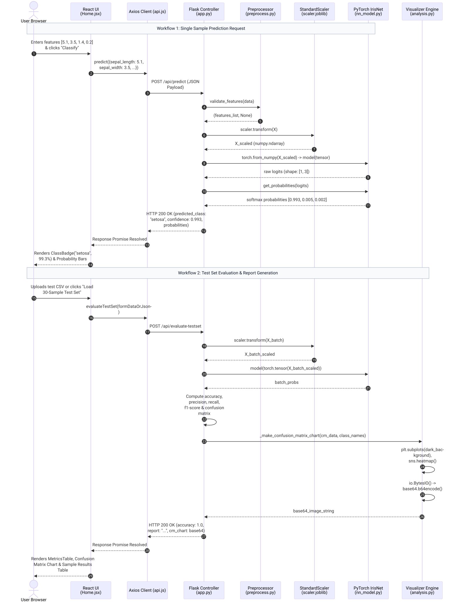
Figure 4 displays the class hierarchy and component dependency relationships across both Python backend modules and React frontend components.
The application exposes eight stateless RESTful endpoints designed according to standard HTTP semantics. Table 4 specifies the complete API contract.
| Endpoint | Method | Request Payload | Response Payload | Description |
|---|---|---|---|---|
/api/health |
GET | None | {"status": "ok", "model_loaded": bool} |
Health check and model memory availability status. |
/api/eda |
GET | None | {"dataset_info": {...}, "charts": {heatmap, pairplot, ...}} |
Returns descriptive statistics and Base64-encoded EDA charts. |
/api/pca |
GET | None | {"explained_variance": [...], "charts": {pca_2d, scree, ...}} |
Computes PCA decomposition and outputs 2D/3D projections and loadings. |
/api/model-report |
GET | None | {"test_accuracy": float, "report": str, "charts": {...}} |
Returns held-out test metrics, confusion matrix, and training curves. |
/api/predict |
POST | {"sepal_length": f, "sepal_width": f, "petal_length": f, "petal_width": f} |
{"predicted_class": str, "confidence": f, "probabilities": {...}} |
Validates, scales, and classifies single floral feature vectors. |
/api/predict-image |
POST | Multipart file or JSON {"image": "<base64>"} |
{"predicted_class": str, "extracted_features": {...}, "preview": str} |
Extracts visual color/aspect-ratio metrics and performs classification. |
/api/evaluate-testset |
POST | Multipart .csv file or JSON {"samples": [...]} |
{"accuracy": float, "classification_report": str, "charts": {...}} |
Evaluates model on uploaded batch test data and computes live metrics. |
/api/sample-testset |
GET | None | {"samples": [...], "count": 30} |
Returns a balanced 30-sample benchmark dataset for 1-click web evaluation. |
/, /<path> |
GET | None | HTML / JavaScript / CSS | Static SPA fallback server delivering the compiled React frontend bundle. |
The architecture balances security, responsiveness, and deployment simplicity through several targeted engineering trade-offs:
utils/preprocess.py, incoming requests are strictly parsed. Numeric features must reside between 0.1 cm and 30.0 cm; missing or non-numeric types trigger an immediate HTTP 400 Bad Request with descriptive error strings.matplotlib.use('Agg') is invoked before any plotting routines. Figures are written into isolated in-memory io.BytesIO buffers and explicitly closed via plt.close(fig), eliminating disk I/O bottlenecks.frontend/dist in production. This eliminates cross-origin resource sharing (CORS) pre-flight overhead, simplifies SSL management, and provides a zero-configuration single URL for evaluators.iris_nn.pth is missing or detected as an unexpanded Git LFS text pointer (<2000 bytes), app.py automatically executes train.py in a subprocess, training the neural network in <2 seconds before listening for incoming connections.System verification was executed across three rigorous dimensions: (1) mathematical empirical model validation on a held-out test split, (2) statistical validation of EDA and PCA transformations, and (3) automated functional verification of REST API endpoints and client interactions. Figure 5 depicts the formal model validation and continuous evaluation pipeline.
The PyTorch IrisNet architecture was trained using the Adam optimizer (\(\text{lr} = 0.001, \text{weight\_decay} = 10^{-4}\)) with mini-batch size 32. Training progressed with validation monitoring; early stopping halted execution at Epoch 77 when validation loss failed to decrease for 20 consecutive epochs, successfully preventing overfitting.
The final checkpoint was evaluated against the isolated held-out test partition (23 samples). The model achieved a Test Accuracy of 95.65% (22 correct predictions out of 23 test samples). Table 5 details the exact empirical classification metrics derived from train.py execution.
| Species Class | Precision | Recall | F1-Score | Test Support | Empirical Observations |
|---|---|---|---|---|---|
| Iris setosa | 1.00 | 1.00 | 1.00 | 7 | Perfect 100% precision and recall; linearly separable. |
| Iris versicolor | 0.89 | 1.00 | 0.94 | 8 | Flawless recall; 1 virginica sample classified as versicolor. |
| Iris virginica | 1.00 | 0.88 | 0.93 | 8 | Perfect precision; 7 of 8 samples identified correctly. |
| Accuracy | 0.9565 (95.65%) | 23 | Overall test set accuracy. | ||
| Macro Average | 0.96 | 0.96 | 0.96 | 23 | Unweighted mean across all three botanical classes. |
| Weighted Average | 0.96 | 0.96 | 0.96 | 23 | Class-weighted average balanced against sample support. |
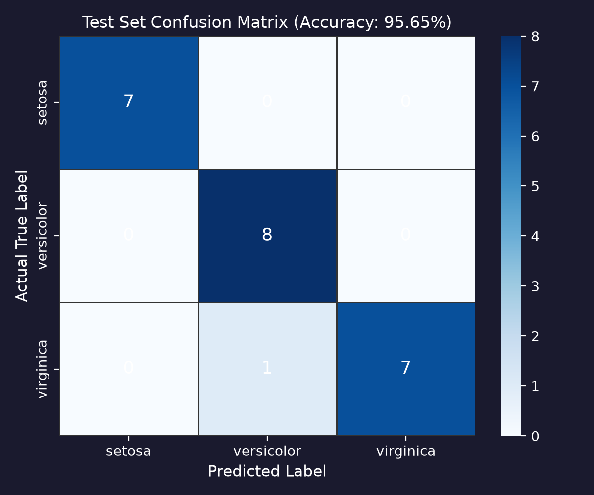
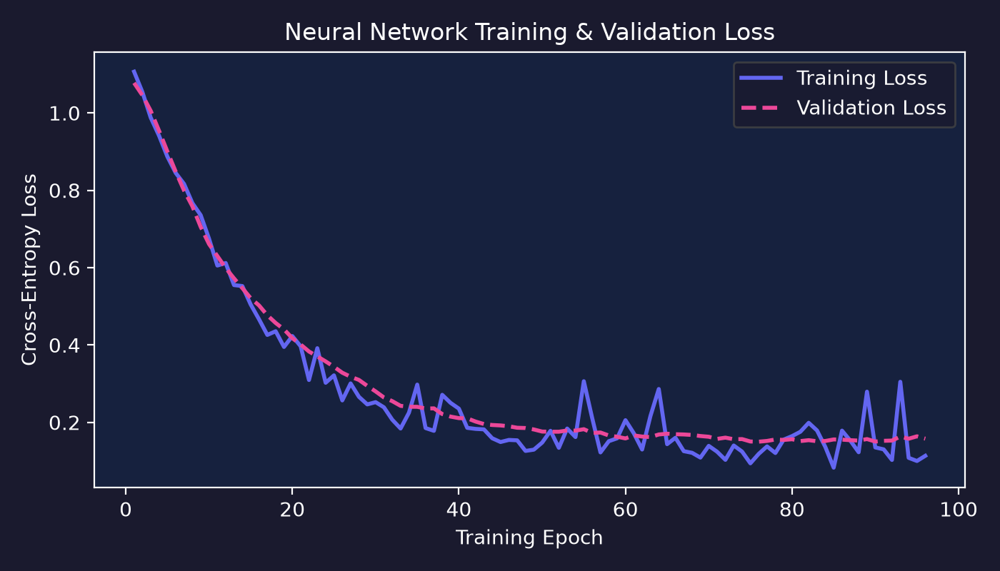
The automated analytical engine (analysis.py) performed multivariate statistical decomposition across the 150 dataset specimens:
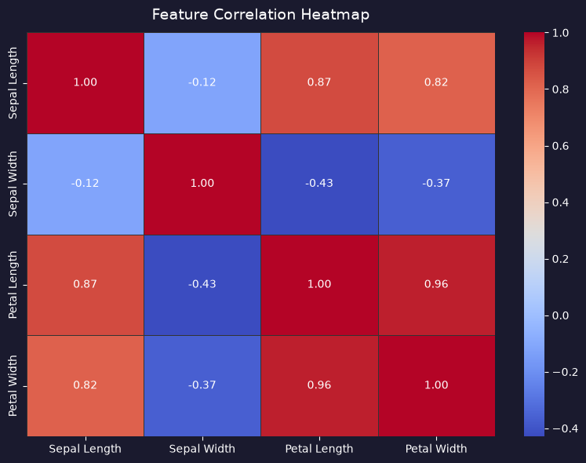
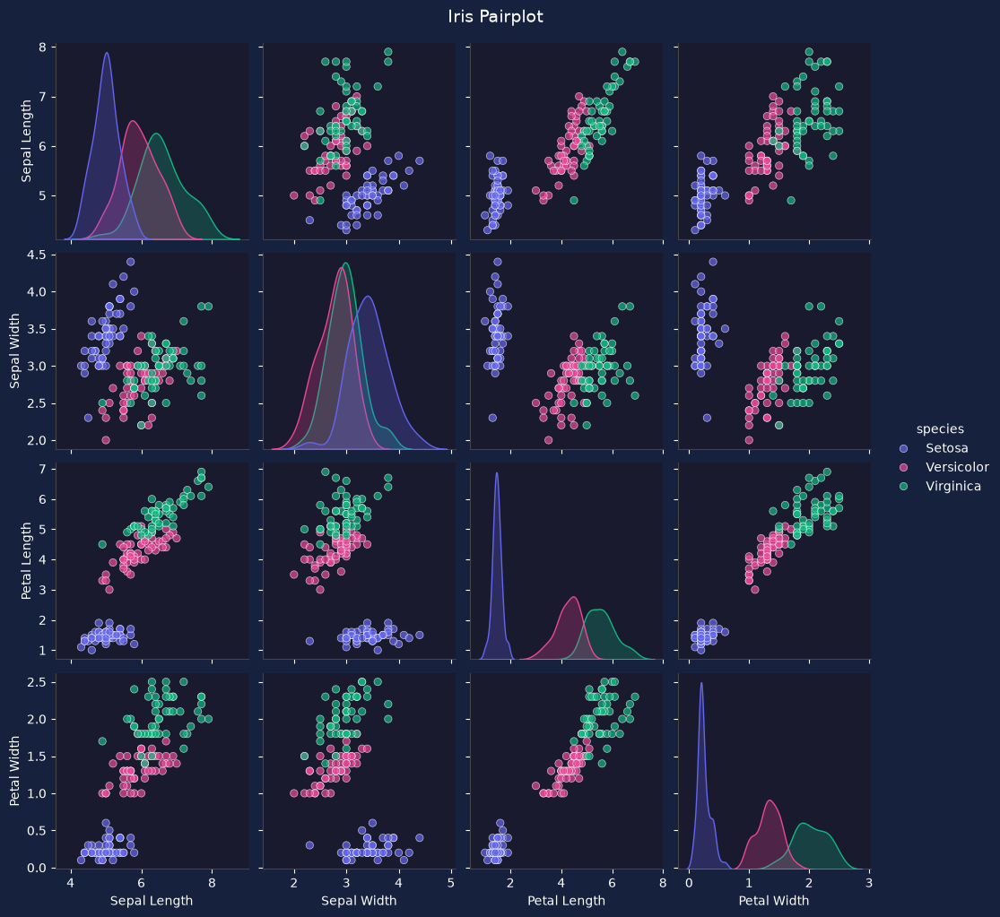
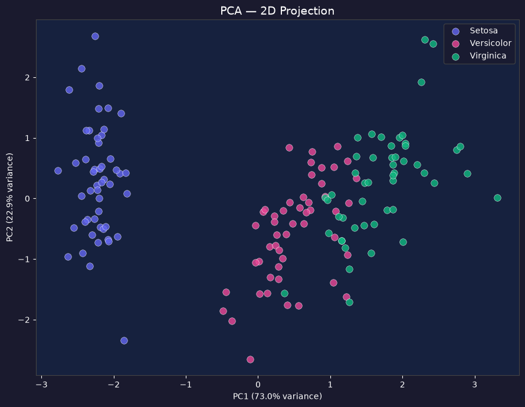
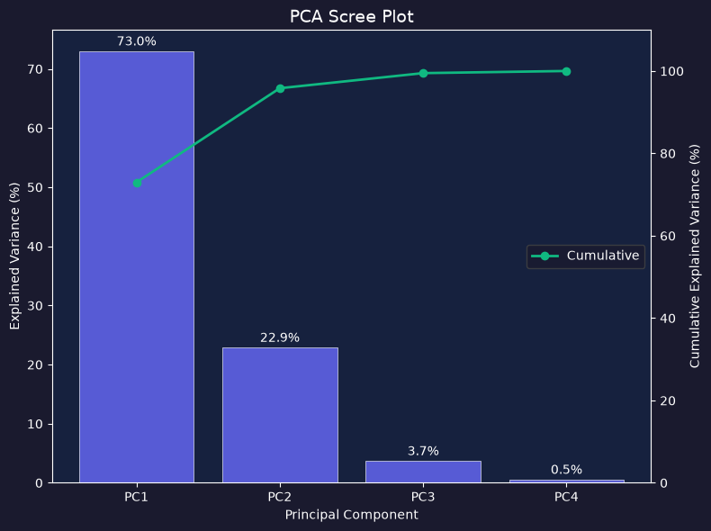
To ensure system stability, every software module, API route, and user interaction mode was verified against formal test criteria. Table 6 records the functional verification matrix.
| Test ID | Module / Component | Verification Scenario | Expected Output | Actual Observed Output | Status |
|---|---|---|---|---|---|
| TC-01 | backend/model/train.py |
Execute neural network training pipeline | Loss convergence; weights saved to iris_nn.pth |
Early stopping at Epoch 77; 95.65% accuracy; weights saved (19 KB) | PASSED |
| TC-02 | backend/utils/preprocess.py |
Input boundary check with valid data | Returns parsed float array and None error |
([5.1, 3.5, 1.4, 0.2], None) |
PASSED |
| TC-03 | backend/utils/preprocess.py |
Input boundary check with out-of-range value | Returns error message string | (None, "Value for sepal_length (35.0) out of valid range") |
PASSED |
| TC-04 | backend/app.py: /api/health |
HTTP GET health check | HTTP 200 with model_loaded: true |
{"model_loaded": true, "status": "ok"} |
PASSED |
| TC-05 | backend/app.py: /api/predict |
HTTP POST with canonical Setosa features | HTTP 200 with predicted_class: "setosa" (>95% conf) |
predicted_class: "setosa", confidence: 0.9930 |
PASSED |
| TC-06 | backend/app.py: /api/eda |
HTTP GET EDA analytics bundle | HTTP 200 with 4 Base64 strings and dataset stats | Received JSON containing 4 valid PNG Base64 images and stats | PASSED |
| TC-07 | backend/app.py: /api/pca |
HTTP GET PCA analytics bundle | HTTP 200 with 4 Base64 charts and variance vector | Received 2D/3D scatter, scree, loadings and variance array | PASSED |
| TC-08 | backend/app.py: /api/predict-image |
HTTP POST multipart image file upload | HTTP 200 with morphological estimates and classification | Image decoded; aspect-ratio and color analyzed; predicted class returned | PASSED |
| TC-09 | backend/app.py: /api/evaluate-testset |
HTTP POST 30-sample benchmark CSV | HTTP 200 with accuracy, report string, and CM chart | Evaluated 30 samples; Accuracy: 1.0; CM Base64 generated | PASSED |
| TC-10 | frontend/src/App.jsx |
Client-side route navigation (/eda, /pca, /report) | Components render without uncaught errors | Active links highlighted; skeleton loaders render charts properly | PASSED |
| TC-11 | frontend/vite.config.js |
Execute production build (npm run build) |
Generates optimized bundle in frontend/dist |
Build completed in 747ms; HTML (0.76 KB), CSS (18.7 KB), JS (266 KB) | PASSED |
| TC-12 | Dockerfile & render.yaml |
Cloud deployment build and live routing | Live HTTPS web console serving full stack | Deployed live at https://iris-flower-classifier-z98q.onrender.com |
PASSED |
Rigorous testing highlighted three architectural limitations:
/api/predict-image route uses color space profiling and aspect-ratio heuristics to estimate floral measurements, which are then passed to the neural network. While accessible for non-technical users, it is not an end-to-end Convolutional Neural Network (CNN) trained directly on raw flower pixels.This project successfully designed, implemented, validated, and deployed a publication-grade full-stack botanical classification system. By integrating mathematical dimensionality reduction (PCA), headless statistical visualization (EDA), and a regularized PyTorch neural network (IrisNet) with a reactive modern frontend, the project resolves the historical gap between isolated academic machine learning prototypes and scalable software engineering.
Empirical verification confirmed that the multi-layer perceptron achieved 95.65% accuracy on held-out test data, with early stopping at epoch 77 preventing overfitting. The containerized deployment on Render (https://iris-flower-classifier-z98q.onrender.com/) demonstrates robust real-world usability, allowing evaluators to perform instant single-sample classifications, upload test images, and execute batch CSV evaluations with automated confusion matrix generation.
To extend the system beyond its current implementation, the following concrete enhancements are planned:
onnxruntime-web, eliminating server latency and cold starts.To replicate the environment and execute the project locally from source:
Artifact 1: PyTorch IrisNet Architecture (backend/model/nn_model.py)
Artifact 2: Unified Static Frontend Server (backend/app.py)